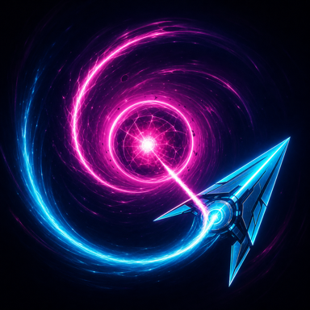

buffer.lol
Open-web utility
A minimal toolbox for network diagnostics, web checks, IP lookups, and everyday developer tasks—searchable, and clear about what runs locally.
Developer / builder
I’m lean, a developer who turns fuzzy ideas into direct, dependable products—developer tools, privacy-minded infrastructure, and native apps.
Open-web utility
A minimal toolbox for network diagnostics, web checks, IP lookups, and everyday developer tasks—searchable, and clear about what runs locally.
Image-hosting platform
Anonymous image hosting for fast uploads, clean direct links, and short retention—with a cross-platform Go CLI for the terminal.
Native iPhone utility
A privacy-focused native iPhone toolkit for IP intelligence, DNS and RDAP registration, offline subnet calculations, batch analysis, saved results, and local exports.
Native iPhone game
A one-thumb orbital score-chaser for iPhone. Bend gravity, thread cores, skim mines, and build Overdrive across endless runs and a shared daily challenge—fully local, with no ads or purchases.

My work sits where product thinking meets engineering.
I build useful web and native iPhone tools, privacy-minded infrastructure, and model-powered workflows that hold up beyond the first demo.
I care about speed, clarity, and the quiet details that make a product feel considered.
TypeScript, React, SwiftUI
Node.js, Python, PostgreSQL
Docker, Linux, network APIs
LLM APIs, agents, retrieval